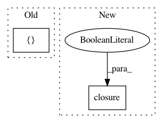

5933b1eb1ffb96ac36a18ffa27c0f17095c3dd6b,tests/python/pants_test/backend/jvm/tasks/test_classpath_products.py,ClasspathProductsTest,test_get_classpath_entries_for_targets_transitive,#ClasspathProductsTest#,299
Before Change
classpath_product.add_for_target(a, [("default", self.path("a/loose/classes/dir")),
("default", self.path("an/internally/generated.jar"))])
classpath = classpath_product.get_classpath_entries_for_targets([a])
self.assertEqual([("default", ArtifactClasspathEntry(example_jar_path,
resolved_jar.coordinate,
resolved_jar.cache_path)),
After Change
classpath_product.add_for_target(a, [("default", self.path("a/loose/classes/dir")),
("default", self.path("an/internally/generated.jar"))])
classpath = classpath_product.get_classpath_entries_for_targets(a.closure(bfs=True))
self.assertEqual([("default", ArtifactClasspathEntry(example_jar_path,
resolved_jar.coordinate,
resolved_jar.cache_path)),
In pattern: SUPERPATTERN
Frequency: 4
Non-data size: 2
Instances
Project Name: pantsbuild/pants
Commit Name: 5933b1eb1ffb96ac36a18ffa27c0f17095c3dd6b
Time: 2015-11-06
Author: stuhood@gmail.com
File Name: tests/python/pants_test/backend/jvm/tasks/test_classpath_products.py
Class Name: ClasspathProductsTest
Method Name: test_get_classpath_entries_for_targets_transitive
Project Name: pantsbuild/pants
Commit Name: 5933b1eb1ffb96ac36a18ffa27c0f17095c3dd6b
Time: 2015-11-06
Author: stuhood@gmail.com
File Name: src/python/pants/backend/jvm/tasks/jvm_binary_task.py
Class Name: JvmBinaryTask
Method Name: list_external_jar_dependencies
Project Name: pantsbuild/pants
Commit Name: 5933b1eb1ffb96ac36a18ffa27c0f17095c3dd6b
Time: 2015-11-06
Author: stuhood@gmail.com
File Name: tests/python/pants_test/backend/jvm/tasks/test_ivy_resolve.py
Class Name: IvyResolveTest
Method Name: test_resolve_multiple_artifacts
Project Name: pantsbuild/pants
Commit Name: 5933b1eb1ffb96ac36a18ffa27c0f17095c3dd6b
Time: 2015-11-06
Author: stuhood@gmail.com
File Name: tests/python/pants_test/backend/jvm/tasks/test_classpath_products.py
Class Name: ClasspathProductsTest
Method Name: test_get_internal_classpath_entries_for_targets